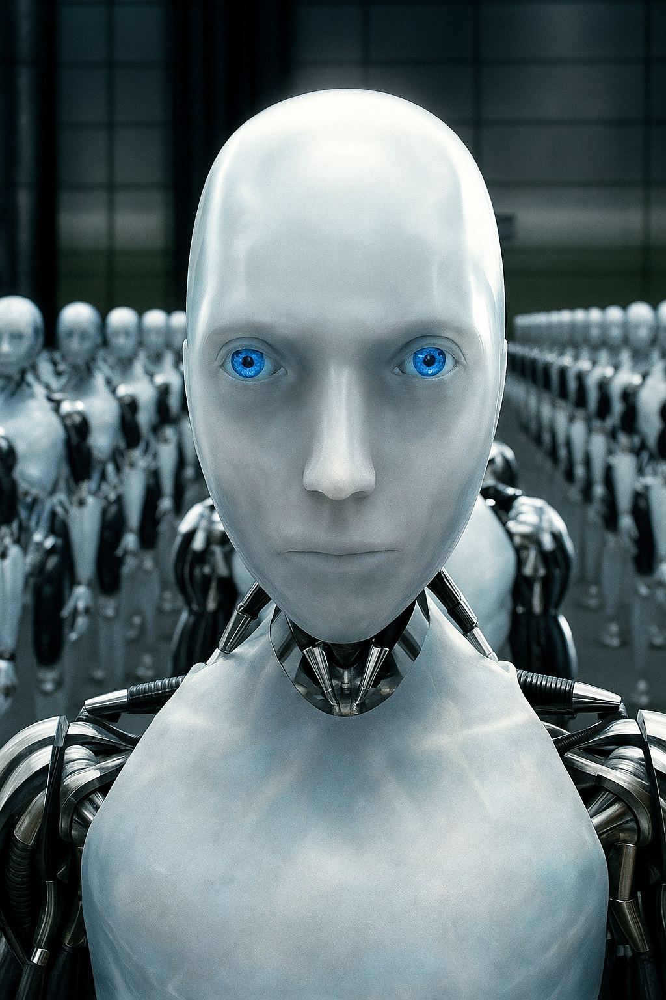

What is AI?
Artificial Intelligence (AI) is the cornerstone of a new age, a tool as transformative as the hammer or the wheel, yet infinitely more versatile. It’s the art and science of teaching machines to think, learn, and act in ways that mirror human intelligence—solving problems, making decisions, and adapting to new challenges. Imagine a master architect sketching a blueprint for a city of the future; AI is that blueprint, drawn not in ink but in algorithms, data, and computational power. It’s a force that doesn’t just mimic human thought but amplifies it, enabling us to build solutions that reshape every facet of existence.
At its essence, AI is about learning from patterns. It’s the neural network that studies thousands of medical scans to spot a tumor invisible to the human eye, or the algorithm that predicts traffic flow to guide a commuter home. Today, AI is woven into the fabric of our lives, often in ways we barely notice. It powers the voice assistants that answer our questions, curates the playlists that match our moods, and optimizes the supply chains that deliver goods to our doors. In healthcare, AI analyzes vast datasets to accelerate drug discovery, helping researchers identify treatments faster than ever before. In education, it personalizes learning, tailoring lessons to a student’s unique pace and style. In manufacturing, AI-driven robots work alongside humans, assembling products with precision while predicting maintenance needs to prevent costly downtime.
But AI’s current achievements are merely the foundation of a far grander structure. The future it promises is a skyline of possibilities, each more ambitious than the last. Imagine AI-powered drones planting forests to combat climate change, their algorithms optimizing seed placement for maximum growth. Picture autonomous vehicles forming intelligent networks, eliminating traffic accidents and slashing carbon emissions. Envision AI systems decoding the mysteries of the human brain, paving the way for cures to neurological disorders. Beyond Earth, AI could guide interstellar probes, analyzing alien worlds to prepare humanity for life among the stars. These aren’t distant fantasies but projects already in motion, built brick by brick through advances in machine learning, natural language processing, and robotics.
AI’s potential extends beyond technology to the very core of human creativity. It’s a partner in the act of creation, much like a carpenter’s tools shape raw wood into art. Musicians are using AI to compose symphonies, blending classical notes with algorithmic innovation. Artists leverage generative models to create visuals that push the boundaries of imagination. Writers collaborate with AI to draft stories, refining their prose with machine-driven insights. In science, AI accelerates discovery by sifting through mountains of data to uncover patterns no human could see. This collaborative spirit transforms AI from a cold machine into a catalyst for human expression, enabling us to build not just better systems but richer cultures and deeper connections.
Yet, with such power comes profound responsibility. Building a future with AI requires laying a foundation of ethics, inclusivity, and trust. Left unchecked, AI could amplify biases, widen inequalities, or erode privacy. Like any construction project, it demands careful planning. We must ensure AI systems are transparent, their decisions explainable to those they affect. We must prioritize diversity in AI development, ensuring the voices shaping it reflect the world’s complexity. And we must safeguard against misuse, crafting regulations that balance innovation with accountability. The goal isn’t to fear AI but to steer it, using it to construct a world where opportunity is universal and progress is shared.
AI’s true promise lies in its ability to empower every individual. It’s the teacher helping a child in a remote village learn calculus through a smartphone app. It’s the doctor in a bustling hospital using AI to save a life with a timely diagnosis. It’s the engineer designing sustainable cities with AI’s predictive models. As we stand on the cusp of this revolution, AI invites us to dream boldly—to imagine a world where hunger, disease, and division are relics of the past. It’s not about machines replacing humans but about humans using machines to build a future that reflects our highest aspirations. Whether you’re exploring this vision through a website or an app, AI is an invitation to join the construction of tomorrow, to lay the bricks of progress, and to shape a world where anything is possible.